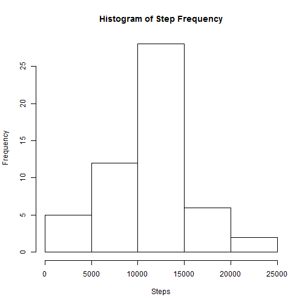
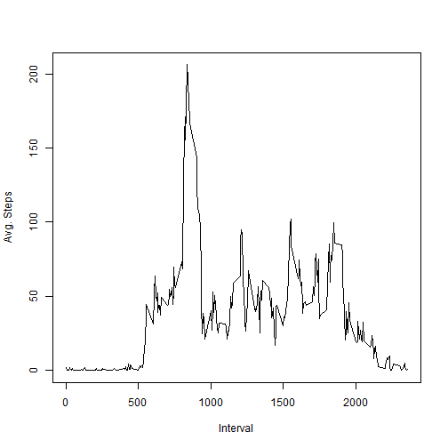
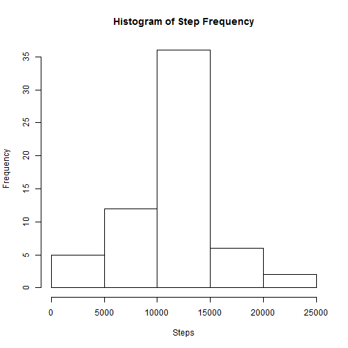
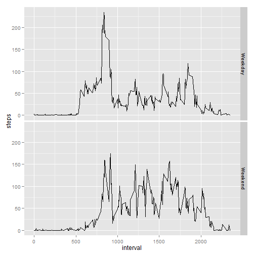

Data is read in via read.csv. Then a subset is created w/ all of the NAs are removed.
data <- read.csv(unz("activity.zip", "activity.csv"))
compData <- subset(data, !is.na(steps))
library(data.table)
data.dt <- data.table(data)
compData.dt <- data.table(compData)
daily <- compData.dt[,list(steps=sum(steps)), by='date']
hist(daily$steps, xlab="Steps", main="Histogram of Step Frequency")

meanSteps1 <- mean(daily$steps)
print(meanSteps1)
## [1] 10766.19
medianSteps1 <- median(daily$steps)
print(medianSteps1)
## [1] 10765
interval <- compData.dt[,list(steps=mean(steps)), by='interval']
plot(interval$interval, interval$steps, type="l", xlab="Interval", ylab="Avg. Steps")

maxSteps <- max(interval$steps)
maxInterval <- subset(interval, steps==maxSteps)
print(maxInterval$interval)
## [1] 835
missingData <- subset(data, is.na(steps))
missingValues <- length(missingData$steps)
print(missingValues)
## [1] 2304
For each piece of missing step data, grab the mean steps for that 5-minute intveral across all the data.
newData.dt = data.table(data)
for(i in 1:length(newData.dt$steps))
{
if(is.na(newData.dt[i]$steps))
{
intervalMean <- subset(interval, interval==newData.dt[i]$interval)
newData.dt[i]$steps <- as.integer(intervalMean$steps)
}
}
daily <- newData.dt[,list(steps=sum(steps)), by='date']
hist(daily$steps, xlab="Steps", main="Histogram of Step Frequency")

meanSteps2 <- mean(daily$steps)
print(meanSteps2)
## [1] 10749.77
medianSteps2 <- median(daily$steps)
print(medianSteps2)
## [1] 10641
dayType <- weekdays(as.Date(data.dt$date))
dayType <- gsub("Monday|Tuesday|Wednesday|Thursday|Friday", "Weekday", dayType)
dayType <- gsub("Saturday|Sunday", "Weekend", dayType)
data <- cbind(data, dayType)
compData <- subset(data, !is.na(steps))
compData.dt <- data.table(compData)
interval <- compData.dt[,list(steps=mean(steps)), by=list(dayType,interval)]
library(ggplot2)
qplot(interval, steps, data=interval, facets=dayType ~., geom="line")
